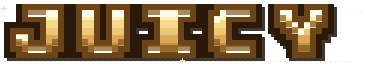
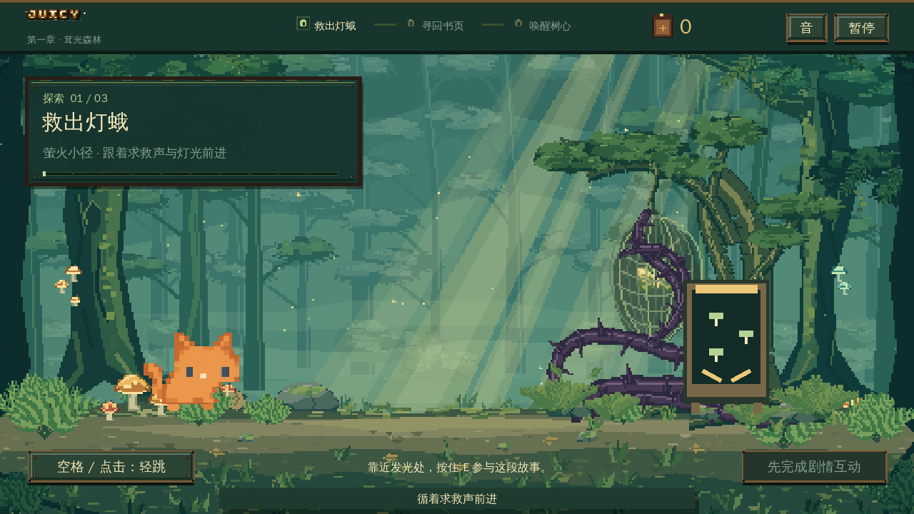
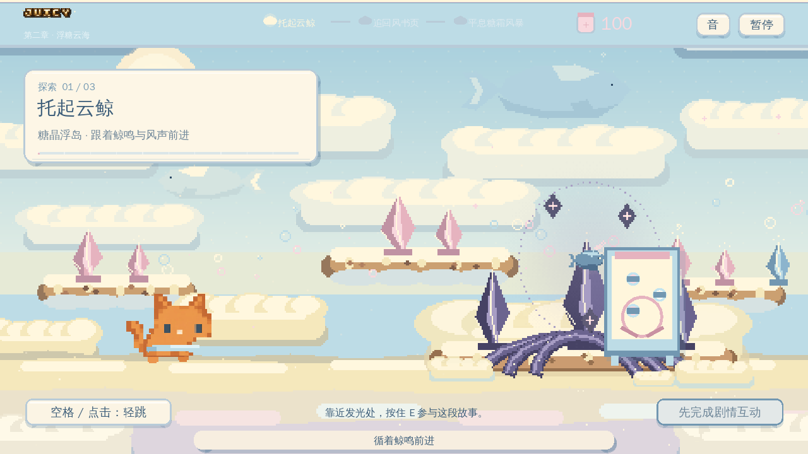
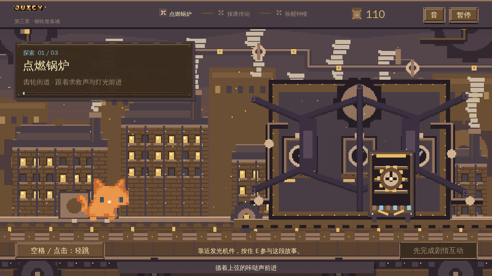
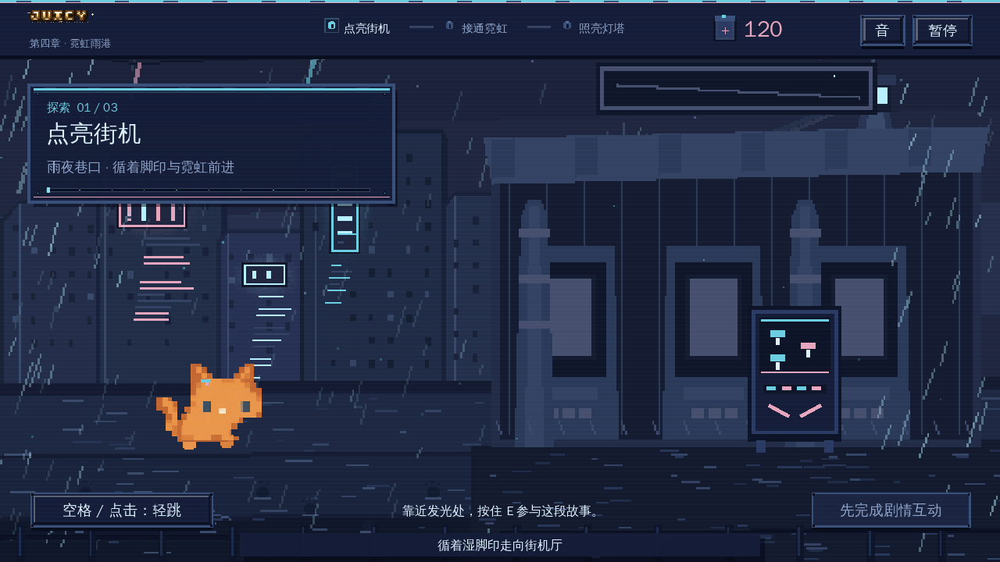
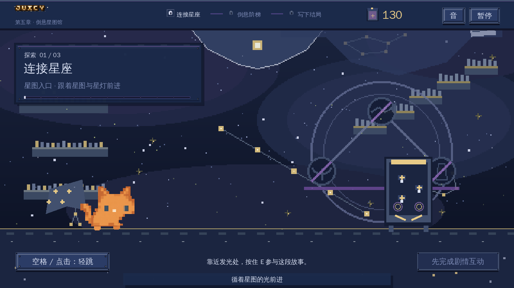

五本故事书 · 一只追着光跑的猫 · 把没人再玩、也没人记得的故事玩回来
一款横向旅行探索 + 弹珠操作的像素风游戏。从午睡的书堆跌入书中世界，穿过森林、云海、发条城、雨港与星图馆，用玩心把被遗忘的世界一点点点亮。
首次加载约 22MB，请稍候并允许 Service Worker；建议电脑浏览器 + 键鼠。

苔绿与蜂蜜金的森林绘本。救灯蛾、寻书页、唤醒树心；孢子多球与菌帽藤链。

奶油云与粉彩梦境。低重力泡泡暂存弹珠，集中释放；云鲸与糖晶风暴。

黄铜蒸汽工坊。磁力导轨与旋转机关，路线规划重于无目标碰撞。

雨夜赛博街机。按序点亮电路节点，电弧连锁叠加倍率，照亮灯塔。

深空图书馆。成对传送门与重力翻转，四章能力综合，为空白之书写下结局。
遗忘的风，只会吹走没人再玩、也没人记得的故事。
只要还有一只猫愿意追着光跑，
被点亮的世界就会一直被记得，故事就永远不会写完。